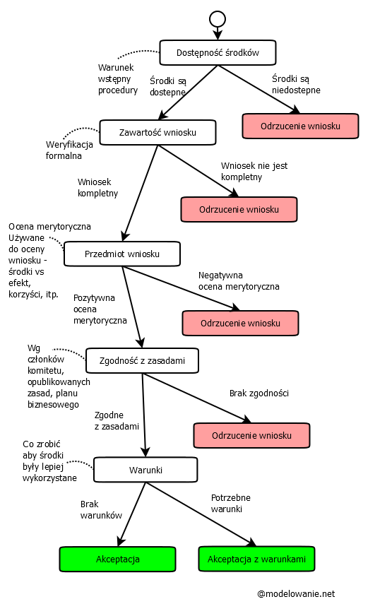
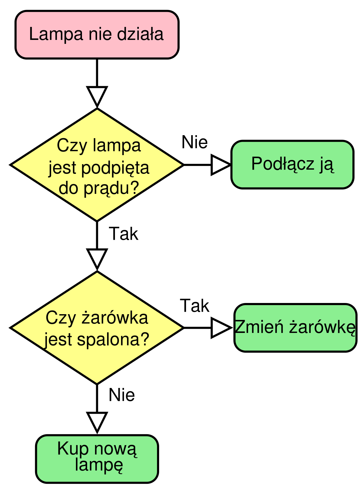
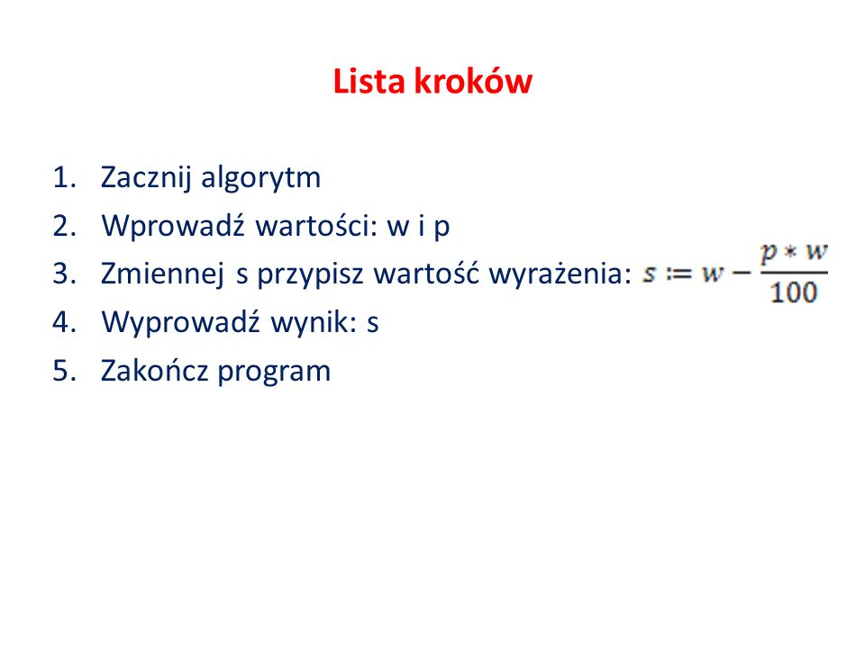

ALGORYTMY
Drzewo decyzyjne:
Drzewo decyzyjne – graficzna metoda wspomagania procesu decyzyjnego, stosowana w teorii decyzji. Algorytm drzew decyzyjnych
jest również stosowany w uczeniu maszynowym do pozyskiwania wiedzy na podstawie przykładów.

Schemat blokowy:
narzędzie służące do przedstawienia kolejnych czynności w projektowanym algorytmie. Jest to diagram, na którym procedura, system lub program komputerowy są reprezentowane przez opisane figury geometryczne połączone strzałkami (niekiedy tylko liniami) zgodnie z kolejnością wykonywania czynności wynikających z przyjętego algorytmu rozwiązania zadania.
Schemat blokowy powinien zapewniać:
- elastyczność zapisów
- możliwość zapisu z użyciem składu wybranego języka programowania
- łatwą kontrolę poprawności algorytmu.
Schematy blokowe pozwalają na prostą zamianę instrukcji na instrukcje programu komputerowego.

Pseudokod:
Pseudokodem nazywany jest taki sposób zapisu algorytmu, który zachowując strukturę charakterystyczną dla kodu zapisanego w
języku programowania, rezygnuje ze ścisłych reguł składniowych na rzecz prostoty i czytelności.

Lista kroków:
Na liście kroków każda operacja, którą należy wykonać, jest zapisywana w postaci numerowanego kroku. Lista kroków pozwała dokładnie zdefiniować cały algorytm.
